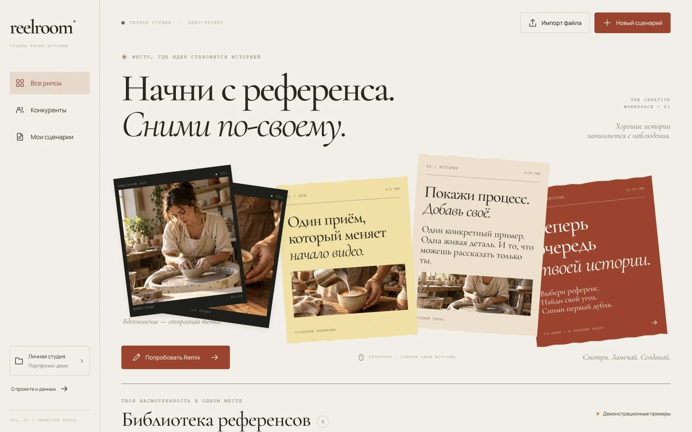
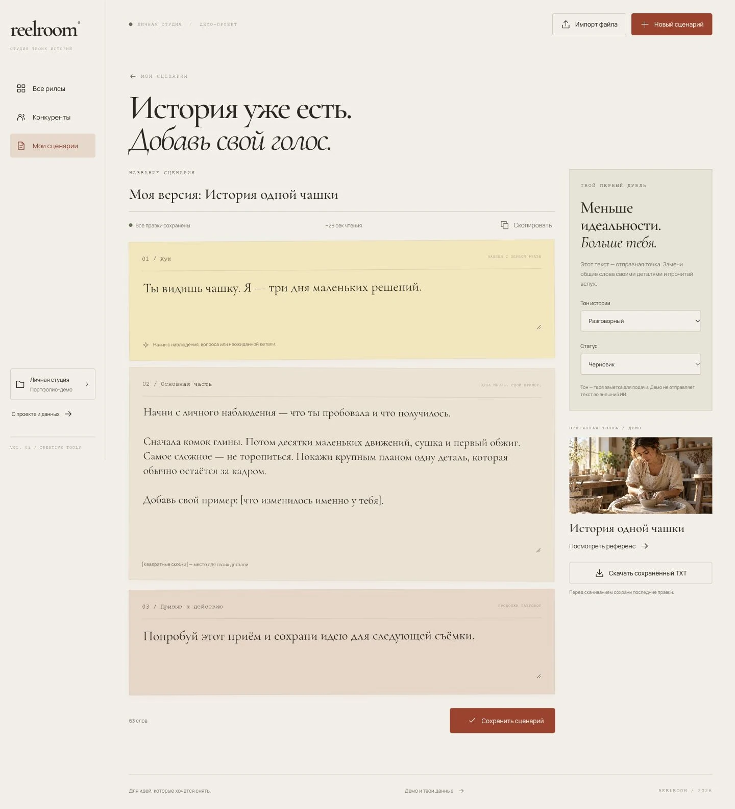
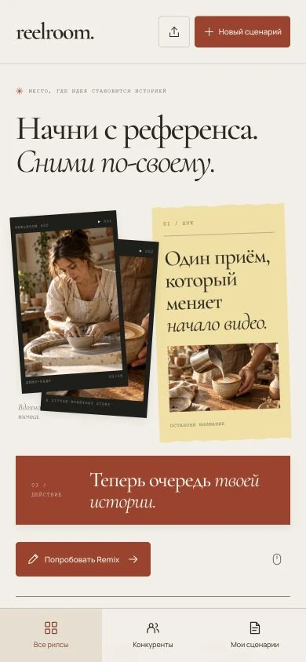

REELROOM.
Сними по-своему.
Пространство, где сохранённые референсы становятся твоими историями. Найти идею, собрать сценарий, добавить свой голос — в одном рабочем процессе.
- Python + FastAPI
- SQLite
- Адаптивный интерфейс
- Портфолио-демо

Формат проекта — портфолио-демо. Библиотека, импорт, сохранение и редактор реализованы в Python-приложении. На этой странице показаны его реальные экраны; интерактивная версия пока запускается локально. Имена авторов и материалы демонстрационные. Remix создаёт редактируемый шаблон; внешние ИИ и Instagram не подключены.
От «сохраню»
к «снято».
Идеи часто теряются среди ссылок и заметок. REELROOM собирает референсы в библиотеку, раскладывает историю на три части и оставляет автору место для своих деталей.
При прокрутке кинокадры и бумажные листы меняют композицию. На телефоне — компактная статичная сцена; при уменьшенном движении анимация отключается.
- 01
Собрать насмотренность
Референсы с поиском, темами и избранным. Отдельный список авторов, за которыми интересно наблюдать.
- 02
Найти свой угол
Remix создаёт шаблон с хуком, основной частью и призывом к действию. Любую часть можно переписать.
- 03
Подготовиться к съёмке
Сохранение сценария, статус готовности, оценка времени чтения, копирование и экспорт TXT.
- 04
Сохранить порядок
Импорт JSON без дубликатов. Раздельные студии посетителей, экспорт и удаление своих материалов.
Внимание — истории.
Всё остальное под рукой.



